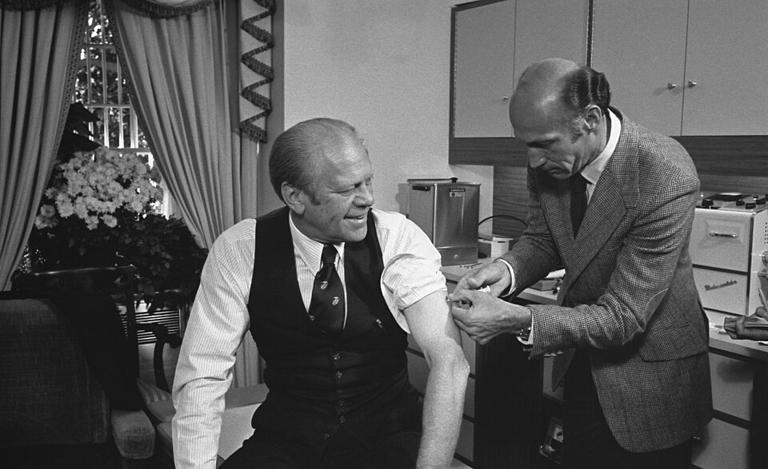

FILE A42-HM-008 // HEALTH & MEDICINE
The 1976 U.S. Swine Flu Vaccination Campaign
ASSESSMENT: A real rare safety signal; not evidence vaccines are broadly unsafe.


The claim and its context
The 1976 swine flu campaign ended after surveillance found an increased Guillain–Barré syndrome risk associated with that particular vaccine, estimated at about one additional case per 100,000 recipients. The program stopped; the risk is real and product-specific, not evidence every vaccine is dangerous.
An outbreak at Fort Dix prompted concern about a 1918-like pandemic. A national immunization program began in autumn 1976. Guillain–Barré reports led to suspension in December. The episode is often retold as either a conspiracy or fabricated signal; neither captures the record.
What is documented
Surveillance and later epidemiological analyses documented the safety signal. The program’s decision-making and risk communication were debated. Its abrupt end reflected a risk-benefit decision under uncertainty, not evidence that adverse effects never occurred.
Clinical and epidemiological evidence
Studies support a small increased risk for that product and period. The syndrome is rare and retrospective diagnosis difficult. The estimate does not transfer automatically to every seasonal influenza vaccine, which uses different formulations and is assessed separately.
Contrary evidence and genuine uncertainty
No pandemic followed, but that does not prove officials knowingly fabricated the threat. Debate concerns how evidence was weighed and communicated. The key uncertainty is decision quality, not whether a neurological signal existed.
Calibrated assessment
This is a documented vaccine-safety event and an example of surveillance detecting a rare adverse effect. It does not prove vaccines generally cause mass paralysis or that authorities concealed all evidence.
A responsible evidence test
Compare case definitions, rates, and later estimates; distinguish the proven signal from speculation about motive. Ask whether a claim addresses the 1976 product or generalizes it. Consult a qualified clinician and current public-health guidance.
Source notes and limitations
- CDC — 1976 swine influenza vaccination programPublic-health retrospective; individual diagnosis remains difficult.
- Institute of Medicine — Influenza Vaccines and Neurological ComplicationsIndependent evidence review; older case ascertainment has limits.
- Schonberger et al. — Guillain–Barré syndrome, 1976–1977Surveillance analysis supports a product-specific small risk.